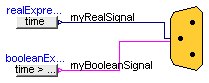

This package contains utility models and bus definitions needed for the BusUsage example.
| Name | Description |
|---|---|
| Interfaces specialised for this example | |
| Component with sub-control bus |
 Modelica.Blocks.Examples.BusUsage_Utilities.Part
Modelica.Blocks.Examples.BusUsage_Utilities.Part
This model is used to demonstrate the bus usage in example BusUsage.
| Type | Name | Description |
|---|---|---|
| SubControlBus | subControlBus |
model Part "Component with sub-control bus" Interfaces.SubControlBus subControlBus; Sources.RealExpression realExpression(y=time); Sources.BooleanExpression booleanExpression(y=time > 0.5); equation connect(realExpression.y, subControlBus.myRealSignal); connect(booleanExpression.y, subControlBus.myBooleanSignal); end Part;